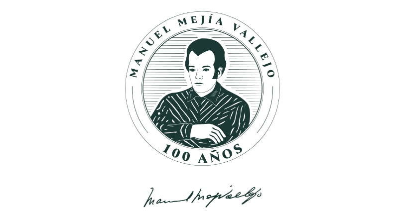
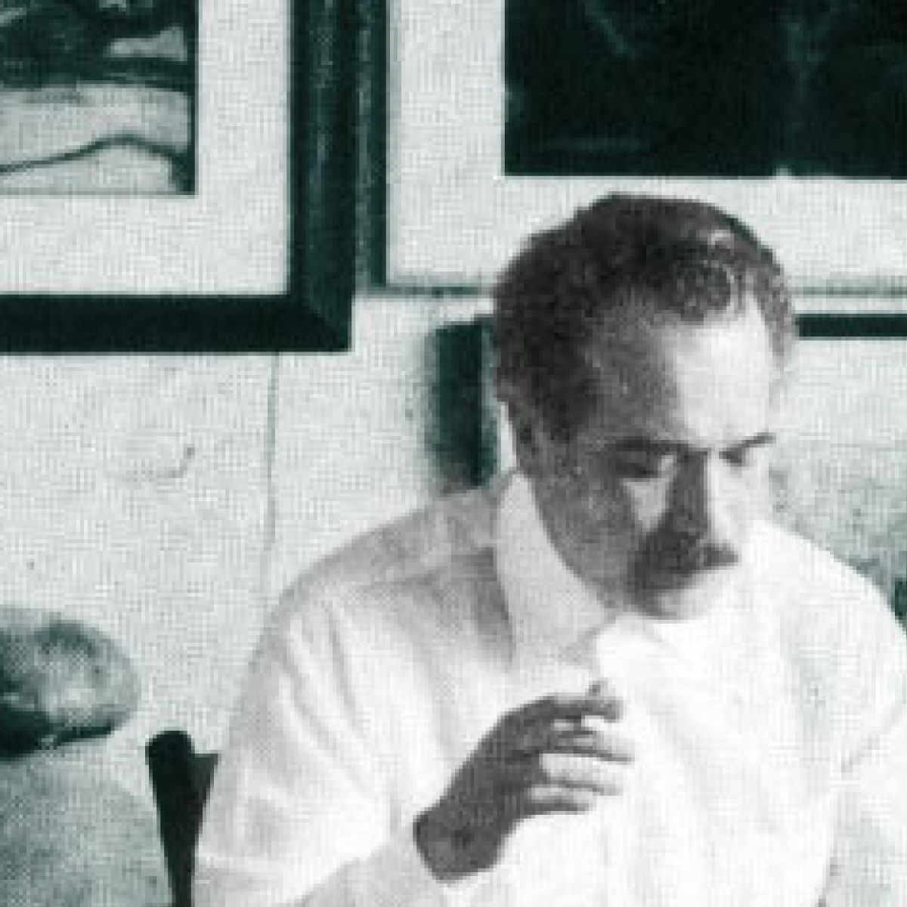
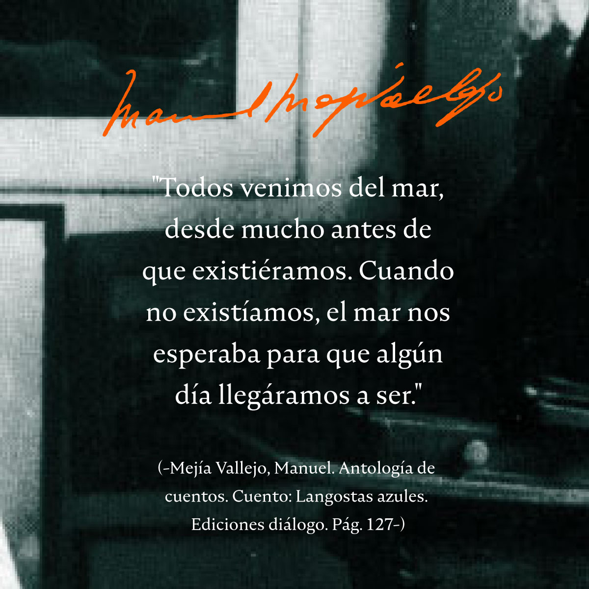
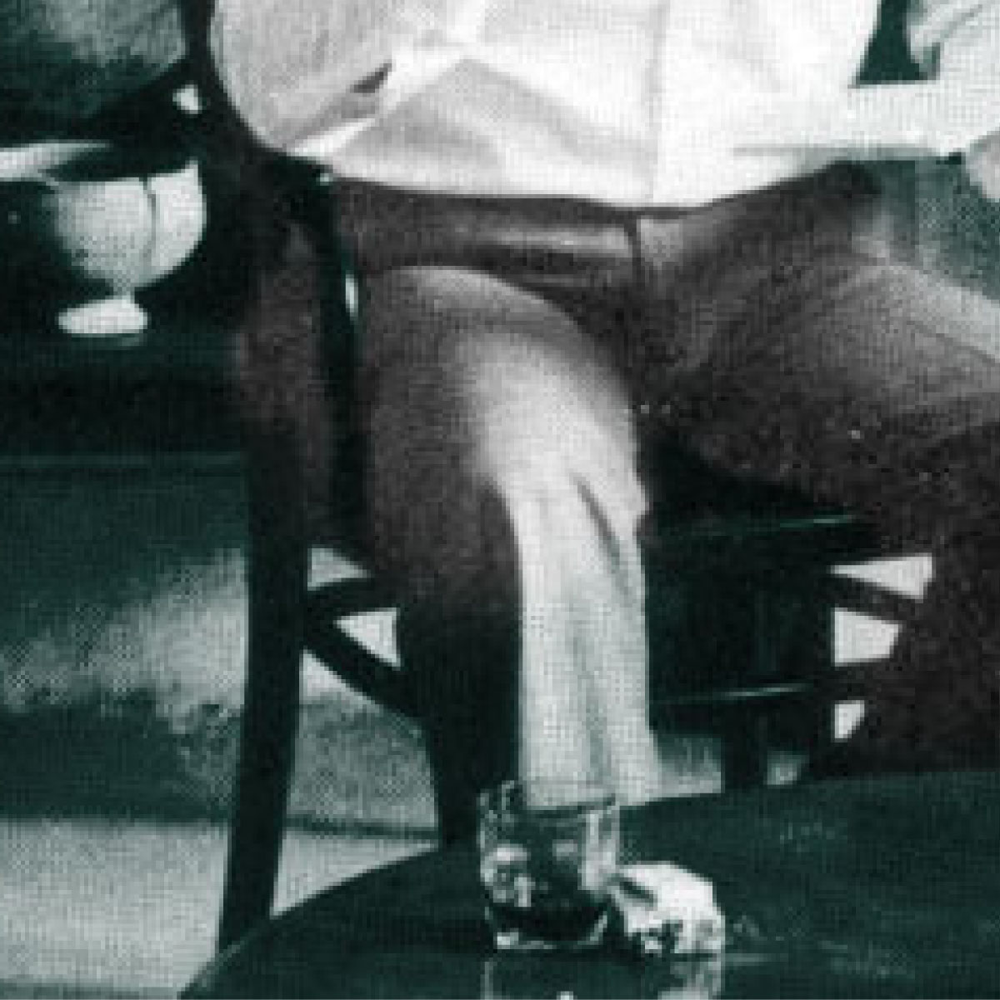
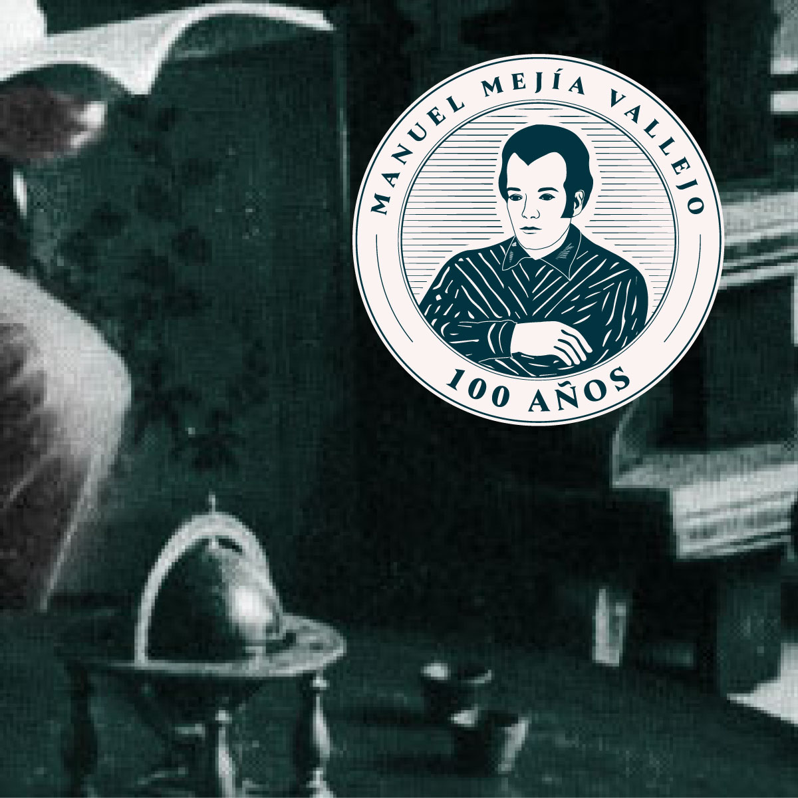

Diseño de identidad visual y manual de marca
Creación del sello para el centenario del escritor antioqueño Manuel Mejía Vallejo. El resultado es una pieza gráfica con significado especifico y cumple como objeto de identificación.

El manual contiene todos los elementos establecidos de la imagen gráfica del centenario de Manuel Mejía Vallejo. Iconográficamente se ha creado una interpretación de Manuel Mejía Vallejo, con una imagen suya realizada por la pintora Dora Ramírez. Se utiliza un grabado en líneas para el fondo y para los contornos del sello.
La propuesta visual integra elementos artísticos y técnicos para consolidar una identidad conmemorativa coherente. A través de la fusión de pintura y grabado, se logra un equilibrio estético que resalta la importancia histórica del personaje en el formato gráfico.



